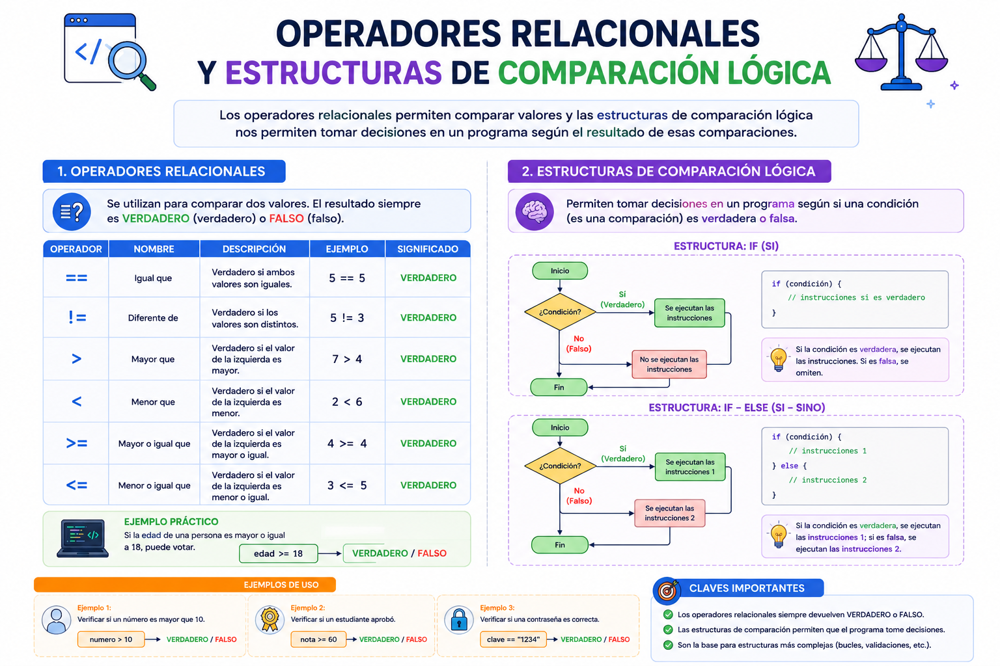

Para ingresar a una plataforma bancaria o un videojuego protegido, la seguridad evalúa condiciones relacionales unidas por un operador lógico: debes escribir la contraseña correcta (`clave == correcta`) **Y** debes tener tu cuenta activa (`estado == activo`). Si se cumplen ambas, el sistema te da acceso. En programación, estas evaluaciones lógicas complejas rigen el comportamiento inteligente de las aplicaciones para tomar decisiones en fracciones de segundo.
⚠️ Debes visualizar el video completo sin adelantar para desbloquear la evaluación.
Material audiovisual adaptado con fines estrictamente educativos. Créditos del autor: code Path.

Los operadores relacionales y lógicos nos permiten comparar valores y entrelazar condiciones múltiples, dando como resultado un único valor booleano (Verdadero o Falso) que altera el rumbo del código.
¿Qué tipo de dato arroja obligatoriamente cualquier operación realizada con operadores relacionales?
¿Qué operador relacional se utiliza para comprobar si dos variables contienen exactamente el mismo valor?
¿Qué condición se debe cumplir para que una expresión unida por el operador lógico Y (AND) sea considerada VERDADERA?
Si evaluamos la expresión lógica `(5 > 3) O (2 > 10)`, ¿cuál es el resultado final calculado por el sistema?
¿Qué función realiza el operador lógico especial NO (NOT)?
¿Cuál es el significado del símbolo de comparación relacional `!=` en lógica computacional?
Si tenemos la variable `edad = 16`, ¿qué devolverá la evaluación condicional `edad >= 18`?
En el ejemplo de acceso a la banca, ¿qué operador lógico es el adecuado para asegurar que se cumpla la contraseña Y que la cuenta esté activa juntas?
¿Qué resultado se obtiene al evaluar la expresión combinada `NO(10 == 10)`?
Si un sistema de videojuegos evalúa `(vidas > 0) Y (nivelCompletado == falso)`, significa que el jugador: